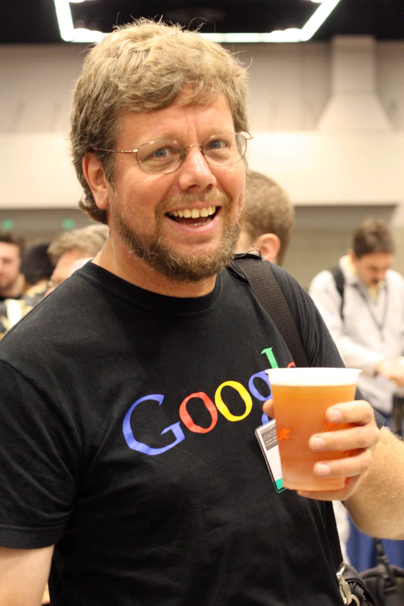
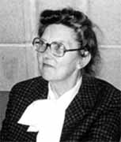

Java: James Gosling
um cientista da computação canadense. Ele liderou a equipe ("Green Team") na Sun Microsystems
que desenvolveu a linguagem no início dos anos 90, originalmente chamada de Oak, focada em
independência de plataforma e voltada para dispositivos interativos.

Guido van Rossum
O criador da linguagem de programação Python é o matemático e programador holandês Guido van Rossum.
Ele iniciou o desenvolvimento do Python em dezembro de 1989 no Centrum Wiskunde & Informatica (CWI)
na Holanda, lançando a primeira versão pública (0.9.0) em fevereiro de 1991.

Brendan Eich
Ele desenvolveu a primeira versão em apenas 10 dias, em maio de 1995, enquanto trabalhava na Netscape
Communications Corporation. Inicialmente chamada de LiveScript, a linguagem foi concebida para trazer
interatividade às páginas da web no navegador Netscape Navigator.

Kathleen Booth
A criadora da primeira linguagem Assembly foi a matemática e cientista da computação britânica Kathleen Booth,
por volta de 1947. Ela desenvolveu a linguagem para o computador ARC (Automatic Relay Calculator) na Universidade de Londres.